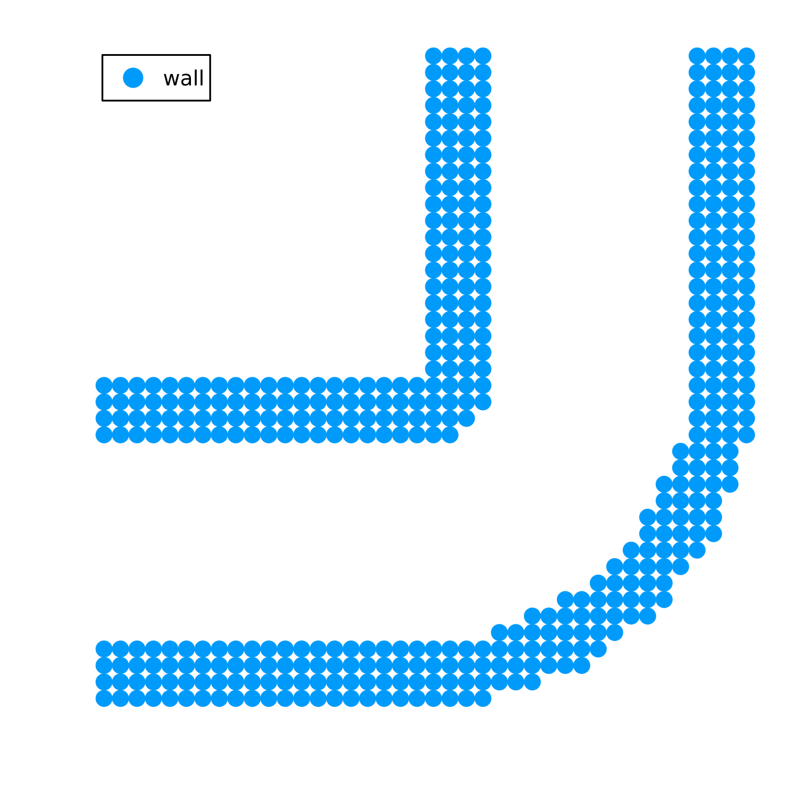
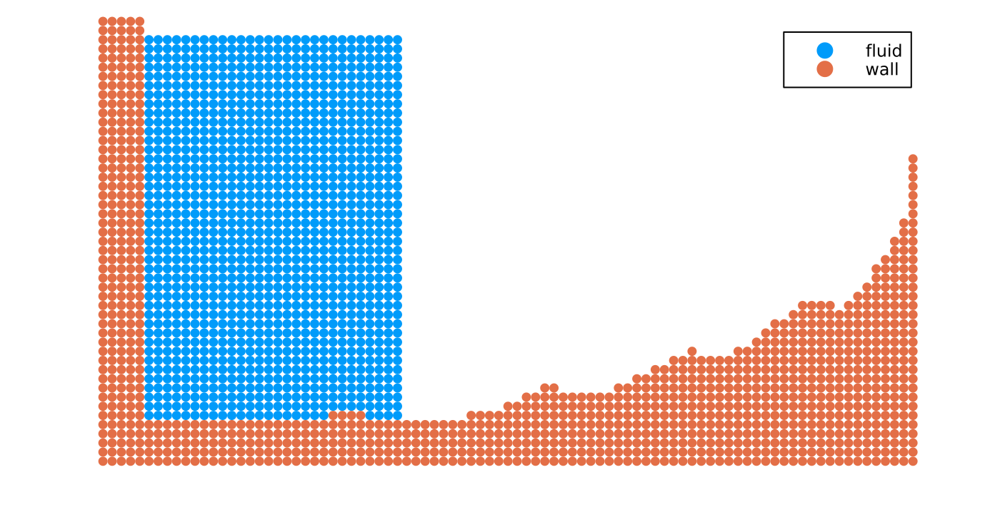
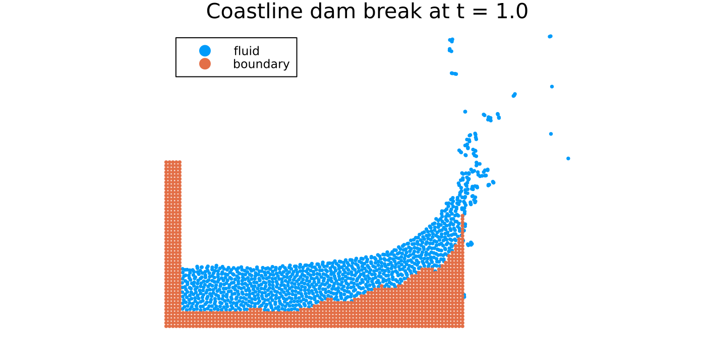

Setting up a 2D simulation from geometry files
In this tutorial, we build two 2D setups from geometry files:
- a curved pipe, where one geometry file defines the outer wall and another defines the channel cut out of it,
- a dam-break basin with a coastline profile, where one geometry file defines the coastline wall and the seawall on the right.
We use 2D geometry formats such as .asc or .dxf for 2D setups. STL files are supported only for 3D geometries.
First, we import TrixiParticles.jl together with OrdinaryDiffEqLowStorageRK of OrdinaryDiffEq.jl and Plots.jl.
using TrixiParticles
using OrdinaryDiffEqLowStorageRK
using PlotsBuilding the geometry
We use the same particle spacing for the fluid and for the wall geometries.
particle_spacing = 0.03
fluid_density = 1000.0
gravity = 9.81
sound_speed = 10.0
state_equation = StateEquationCole(; sound_speed, reference_density=fluid_density,
exponent=7)Loading the 2D geometry files
The following helper loads a closed 2D geometry file and samples particles in its interior:
- load the polygon with
load_geometry, - fill the polygon with
ComplexShape.
This creates a filled 2D solid region rather than particles only along the polygon edges. The half-spacing grid_offset shifts the sampling grid in each coordinate direction to avoid placing particles directly on the grid-aligned edges of these geometries.
function solid_from_geometry_file(file; particle_spacing, density)
geometry = load_geometry(file)
solid = ComplexShape(geometry; particle_spacing, density,
grid_offset=0.5particle_spacing)
return (; geometry, solid)
endA curved pipe from two filled geometries
The pipe wall is an L-shaped solid region with a channel cut out of it:
- one geometry file describes the outer pipe envelope,
- one geometry file describes the empty channel,
setdiffsubtracts the channel from the solid envelope.
pipe_outer_file = pkgdir(TrixiParticles, "examples", "preprocessing", "data",
"curved_pipe_outer_2d.asc")
pipe_channel_file = pkgdir(TrixiParticles, "examples", "preprocessing", "data",
"curved_pipe_channel_2d.asc")
pipe_outer = solid_from_geometry_file(pipe_outer_file; particle_spacing,
density=fluid_density)
pipe_channel = load_geometry(pipe_channel_file)
pipe_setup = (; wall=setdiff(pipe_outer.solid, pipe_channel),
outer_geometry=pipe_outer.geometry,
channel_geometry=pipe_channel)
p_pipe = plot(pipe_setup.wall, label="wall", size=(450, 450), showaxis=false,
xlims=(-0.03, 1.23), ylims=(-0.03, 1.23))
A dam-break basin with a coastline profile
In the second setup, one 2D geometry file defines the coastline wall: the beach profile, a finite wall thickness below it, and the seawall on the right.
coast_file = pkgdir(TrixiParticles, "examples", "preprocessing", "data",
"coastline_profile_2d.asc")
coast = solid_from_geometry_file(coast_file; particle_spacing, density=fluid_density)The geometry file defines the coastline bed and right wall as a solid region. We add the left wall as a rectangular particle block and place a rectangular dam-break water column beside it.
left_wall = RectangularShape(particle_spacing, (5, 50), (0.0, -0.12),
density=fluid_density)
reservoir = RectangularShape(particle_spacing, (28, 42), (0.15, 0.03),
acceleration=(0.0, -gravity),
state_equation=state_equation)
coast_setup = (; geometry=coast.geometry,
wall=union(coast.solid, left_wall),
fluid=setdiff(reservoir, coast.geometry))
p_coast = plot(coast_setup.fluid, coast_setup.wall, labels=["fluid" "wall"],
size=(700, 360), showaxis=false, xlims=(0.0, 2.75), ylims=(-0.15, 1.35))
Running a coastline simulation
We continue with the coastline setup using the systems, semidiscretization, and time integration described in Setting up your simulation from scratch.
setup = coast_setup
tspan = (0.0, 1.0)
smoothing_length = 1.2 * particle_spacing
smoothing_kernel = SchoenbergCubicSplineKernel{2}()
viscosity = ArtificialViscosityMonaghan(alpha=0.02, beta=0.0)
fluid_density_calculator = ContinuityDensity()
density_diffusion = DensityDiffusionMolteniColagrossi(delta=0.1)
fluid_system = WeaklyCompressibleSPHSystem(setup.fluid;
density_calculator=fluid_density_calculator,
state_equation, smoothing_kernel,
smoothing_length, viscosity=viscosity,
density_diffusion=density_diffusion,
acceleration=(0.0, -gravity))
boundary_model = BoundaryModelDummyParticles(setup.wall.density, setup.wall.mass,
state_equation=state_equation,
AdamiPressureExtrapolation(),
smoothing_kernel, smoothing_length)
boundary_system = WallBoundarySystem(setup.wall, boundary_model)
semi = Semidiscretization(fluid_system, boundary_system)
ode = semidiscretize(semi, tspan)
callbacks = CallbackSet(InfoCallback(interval=10))
sol = solve(ode, RDPK3SpFSAL35(), save_everystep=false, callback=callbacks)
plot(sol, title="Coastline dam break at t = $(sol.t[end])",
size=(700, 360), showaxis=false, legend=:topleft)
████████╗██████╗ ██╗██╗ ██╗██╗██████╗ █████╗ ██████╗ ████████╗██╗ ██████╗██╗ ███████╗███████╗
╚══██╔══╝██╔══██╗██║╚██╗██╔╝██║██╔══██╗██╔══██╗██╔══██╗╚══██╔══╝██║██╔════╝██║ ██╔════╝██╔════╝
██║ ██████╔╝██║ ╚███╔╝ ██║██████╔╝███████║██████╔╝ ██║ ██║██║ ██║ █████╗ ███████╗
██║ ██╔══██╗██║ ██╔██╗ ██║██╔═══╝ ██╔══██║██╔══██╗ ██║ ██║██║ ██║ ██╔══╝ ╚════██║
██║ ██║ ██║██║██╔╝ ██╗██║██║ ██║ ██║██║ ██║ ██║ ██║╚██████╗███████╗███████╗███████║
╚═╝ ╚═╝ ╚═╝╚═╝╚═╝ ╚═╝╚═╝╚═╝ ╚═╝ ╚═╝╚═╝ ╚═╝ ╚═╝ ╚═╝ ╚═════╝╚══════╝╚══════╝╚══════╝
┌──────────────────────────────────────────────────────────────────────────────────────────────────┐
│ Semidiscretization │
│ ══════════════════ │
│ #spatial dimensions: ………………………… 2 │
│ #systems: ……………………………………………………… 2 │
│ neighborhood search: ………………………… GridNeighborhoodSearch │
│ total #particles: ………………………………… 2247 │
│ eltype: …………………………………………………………… Float64 │
│ coordinates eltype: …………………………… Float64 │
└──────────────────────────────────────────────────────────────────────────────────────────────────┘
┌──────────────────────────────────────────────────────────────────────────────────────────────────┐
│ WeaklyCompressibleSPHSystem{2} │
│ ══════════════════════════════ │
│ #particles: ………………………………………………… 1172 │
│ density calculator: …………………………… ContinuityDensity │
│ correction method: ……………………………… Nothing │
│ state equation: ……………………………………… StateEquationCole │
│ smoothing kernel: ………………………………… SchoenbergCubicSplineKernel │
│ viscosity: …………………………………………………… ArtificialViscosityMonaghan{Float64}(0.02, 0.0, 0.01) │
│ density diffusion: ……………………………… DensityDiffusionMolteniColagrossi{Float64}(0.1) │
│ shifting technique: …………………………… nothing │
│ surface tension: …………………………………… nothing │
│ surface normal method: …………………… nothing │
│ acceleration: …………………………………………… [0.0, -9.81] │
│ source terms: …………………………………………… Nothing │
└──────────────────────────────────────────────────────────────────────────────────────────────────┘
┌──────────────────────────────────────────────────────────────────────────────────────────────────┐
│ WallBoundarySystem{2} │
│ ═════════════════════ │
│ #particles: ………………………………………………… 1075 │
│ boundary model: ……………………………………… BoundaryModelDummyParticles(AdamiPressureExtrapolation, Nothing) │
│ movement function: ……………………………… nothing │
│ adhesion coefficient: ……………………… 0.0 │
│ color: ……………………………………………………………… 0 │
└──────────────────────────────────────────────────────────────────────────────────────────────────┘
┌──────────────────────────────────────────────────────────────────────────────────────────────────┐
│ Time integration │
│ ════════════════ │
│ Start time: ………………………………………………… 0.0 │
│ Final time: ………………………………………………… 1.0 │
│ time integrator: …………………………………… RDPK3SpFSAL35 │
│ adaptive: ……………………………………………………… true │
│ abstol: …………………………………………………………… 1.0e-6 │
│ reltol: …………………………………………………………… 0.001 │
│ controller: ………………………………………………… PIDController(beta=(0.7, -0.23, …iter=default_dt_factor_limiter) │
└──────────────────────────────────────────────────────────────────────────────────────────────────┘
┌──────────────────────────────────────────────────────────────────────────────────────────────────┐
│ Environment information │
│ ═══════════════════════ │
│ Julia version: ………………………………………… 1.13.3 │
│ parallelization backend: ……………… PolyesterBackend │
│ #threads: ……………………………………………………… 1 │
└──────────────────────────────────────────────────────────────────────────────────────────────────┘
#timesteps: 10 │ Δt: 2.1026e-03 │ sim. time: 7.7799e-03 (0.778%) │ run time: 1.0449e+00 s
#timesteps: 20 │ Δt: 3.6990e-03 │ sim. time: 4.2433e-02 (4.243%) │ run time: 1.0759e+00 s
#timesteps: 30 │ Δt: 7.1878e-03 │ sim. time: 9.2912e-02 (9.291%) │ run time: 1.1123e+00 s
#timesteps: 40 │ Δt: 4.1301e-03 │ sim. time: 1.4654e-01 (14.654%) │ run time: 1.1622e+00 s
#timesteps: 50 │ Δt: 3.3808e-03 │ sim. time: 1.8305e-01 (18.305%) │ run time: 1.1999e+00 s
#timesteps: 60 │ Δt: 3.8301e-03 │ sim. time: 2.2003e-01 (22.003%) │ run time: 1.2382e+00 s
#timesteps: 70 │ Δt: 3.2592e-03 │ sim. time: 2.5342e-01 (25.342%) │ run time: 1.2814e+00 s
#timesteps: 80 │ Δt: 3.2283e-03 │ sim. time: 2.8463e-01 (28.463%) │ run time: 1.3254e+00 s
#timesteps: 90 │ Δt: 4.0065e-03 │ sim. time: 3.1870e-01 (31.870%) │ run time: 1.3658e+00 s
#timesteps: 100 │ Δt: 3.9208e-03 │ sim. time: 3.5588e-01 (35.588%) │ run time: 1.4065e+00 s
#timesteps: 110 │ Δt: 3.7886e-03 │ sim. time: 3.9472e-01 (39.472%) │ run time: 1.4472e+00 s
#timesteps: 120 │ Δt: 3.3569e-03 │ sim. time: 4.3144e-01 (43.144%) │ run time: 1.4878e+00 s
#timesteps: 130 │ Δt: 3.5453e-03 │ sim. time: 4.6773e-01 (46.773%) │ run time: 1.5438e+00 s
#timesteps: 140 │ Δt: 3.0980e-03 │ sim. time: 4.9738e-01 (49.738%) │ run time: 1.5942e+00 s
#timesteps: 150 │ Δt: 3.5683e-03 │ sim. time: 5.3072e-01 (53.072%) │ run time: 1.6372e+00 s
#timesteps: 160 │ Δt: 3.2215e-03 │ sim. time: 5.6253e-01 (56.253%) │ run time: 1.6803e+00 s
#timesteps: 170 │ Δt: 3.6909e-03 │ sim. time: 5.9416e-01 (59.416%) │ run time: 1.7231e+00 s
#timesteps: 180 │ Δt: 3.1493e-03 │ sim. time: 6.2740e-01 (62.740%) │ run time: 1.7658e+00 s
#timesteps: 190 │ Δt: 3.4493e-03 │ sim. time: 6.5844e-01 (65.844%) │ run time: 1.8082e+00 s
#timesteps: 200 │ Δt: 2.1736e-03 │ sim. time: 6.8859e-01 (68.859%) │ run time: 1.8554e+00 s
#timesteps: 210 │ Δt: 3.6799e-03 │ sim. time: 7.2095e-01 (72.095%) │ run time: 1.8987e+00 s
#timesteps: 220 │ Δt: 3.5499e-03 │ sim. time: 7.5521e-01 (75.521%) │ run time: 1.9423e+00 s
#timesteps: 230 │ Δt: 3.7806e-03 │ sim. time: 7.9211e-01 (79.211%) │ run time: 1.9859e+00 s
#timesteps: 240 │ Δt: 3.3694e-03 │ sim. time: 8.2809e-01 (82.809%) │ run time: 2.0295e+00 s
#timesteps: 250 │ Δt: 4.0934e-03 │ sim. time: 8.6765e-01 (86.765%) │ run time: 2.0729e+00 s
#timesteps: 260 │ Δt: 4.3883e-03 │ sim. time: 9.1034e-01 (91.034%) │ run time: 2.1165e+00 s
#timesteps: 270 │ Δt: 4.2860e-03 │ sim. time: 9.5296e-01 (95.296%) │ run time: 2.1604e+00 s
#timesteps: 280 │ Δt: 3.8737e-03 │ sim. time: 9.9160e-01 (99.160%) │ run time: 2.2126e+00 s
────────────────────────────────────────────────────────────────────────────────────────────────────
Trixi simulation finished.
Final time: 1.0
Time steps: 283 (accepted) 294 (total)
────────────────────────────────────────────────────────────────────────────────────────────────────
TrixiParticles.jl
─────────────────────────────────────────────────────────────────────────────────────────────
Time Allocations
────────────────────── ────────────────────────
Tot / % measured: 3.20s / 36.5% 143MiB / 9.0%
─────────────────────────────────────── ────────────────────── ────────────────────────
Section ncalls time %tot avg alloc %tot avg
─────────────────────────────────────────────────────────────────────────────────────────────
kick! 1.47k 1.17s 99.9% 791μs 12.8MiB 100.0% 8.92KiB
├─ system interaction 1.47k 987ms 84.5% 670μs 1.51MiB 11.7% 1.05KiB
│ ├─ fluid1-fluid1 1.47k 865ms 74.1% 587μs ∅ ∅ ∅
│ ├─ fluid1-boundary2 1.47k 117ms 10.1% 79.7μs ∅ ∅ ∅
│ ├─ ~system interaction~ 1.47k 4.83ms 0.4% 3.28μs 1.51MiB 11.7% 1.05KiB
│ ├─ boundary2-boundary2 1.47k 36.0μs 0.0% 24.5ns ∅ ∅ ∅
│ └─ boundary2-fluid1 1.47k 35.8μs 0.0% 24.3ns ∅ ∅ ∅
├─ update systems and nhs 1.47k 175ms 15.0% 119μs 11.3MiB 88.2% 7.87KiB
│ ├─ compute boundary pressure 1.47k 112ms 9.6% 76.2μs ∅ ∅ ∅
│ ├─ update nhs 1.47k 34.4ms 2.9% 23.3μs 11.3MiB 88.2% 7.87KiB
│ ├─ inverse state equation 1.47k 15.4ms 1.3% 10.5μs ∅ ∅ ∅
│ ├─ ~update systems and nhs~ 1.47k 12.7ms 1.1% 8.65μs 848B 0.0% 0.58B
│ └─ update density diffusion 1.47k 35.4μs 0.0% 24.0ns ∅ ∅ ∅
├─ source terms 1.47k 2.74ms 0.2% 1.86μs ∅ ∅ ∅
├─ ~kick!~ 1.47k 677μs 0.1% 460ns 848B 0.0% 0.58B
└─ reset ∂v/∂t 1.47k 492μs 0.0% 334ns ∅ ∅ ∅
drift! 1.47k 1.65ms 0.1% 1.12μs ∅ ∅ ∅
─────────────────────────────────────────────────────────────────────────────────────────────
For more accurate body-fitted particles around sharper features, you can also apply the particle packing workflow to the 2D geometry files before starting the simulation.
This page was generated using Literate.jl.